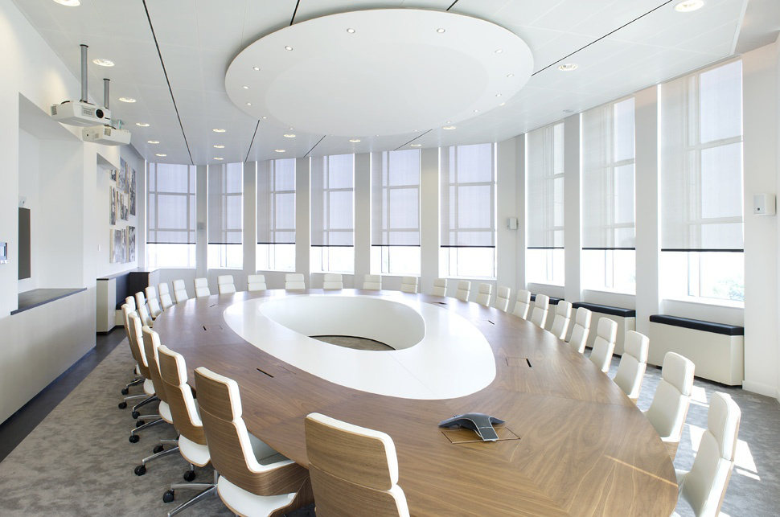
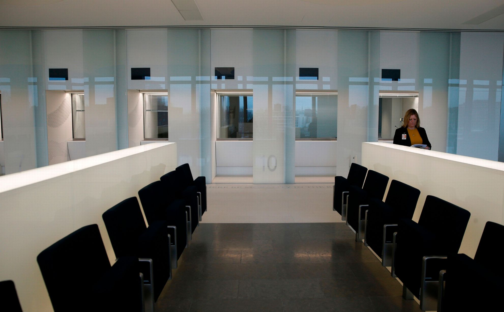
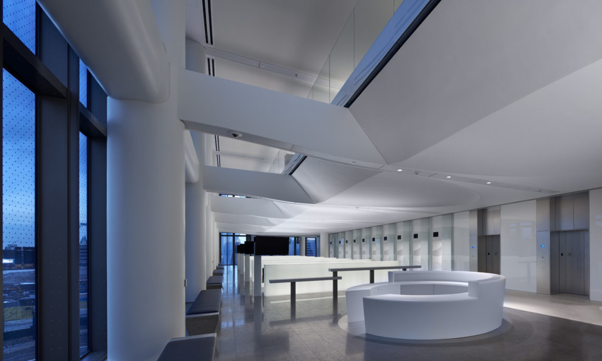
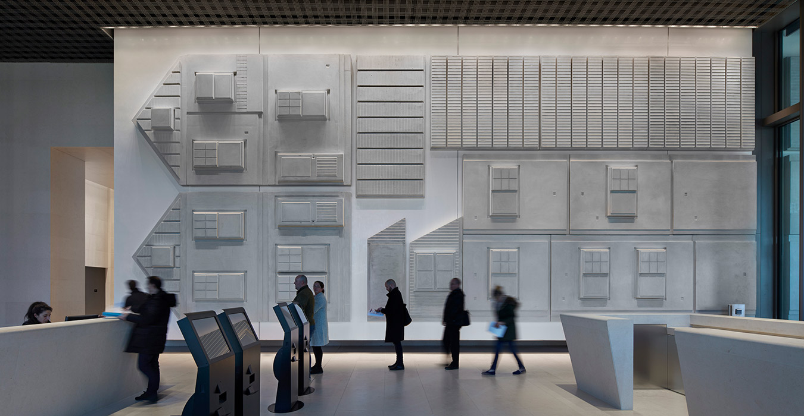
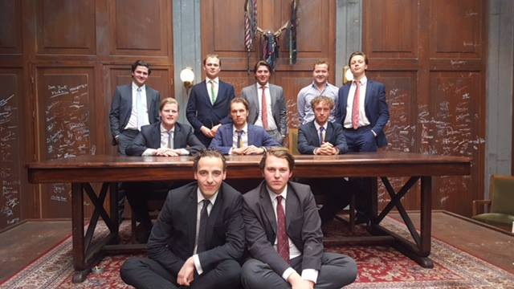
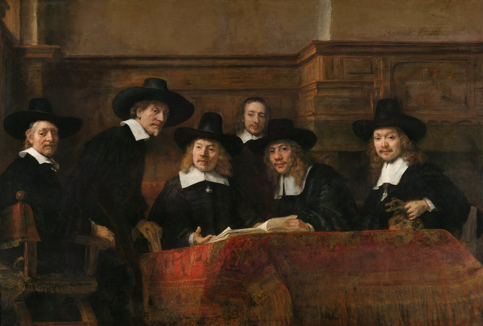
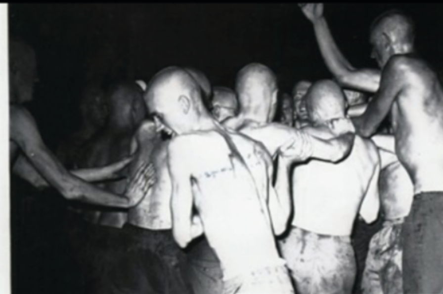
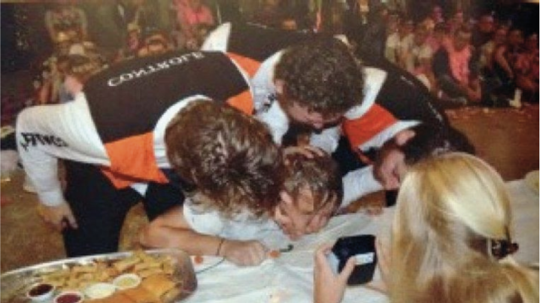
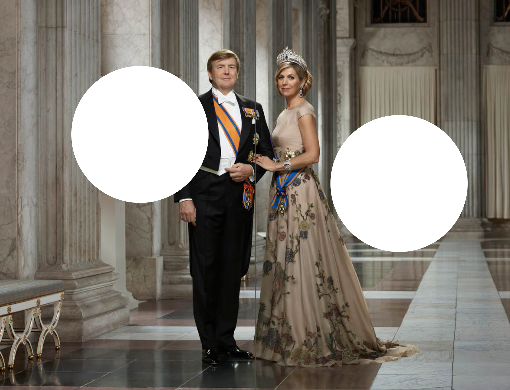
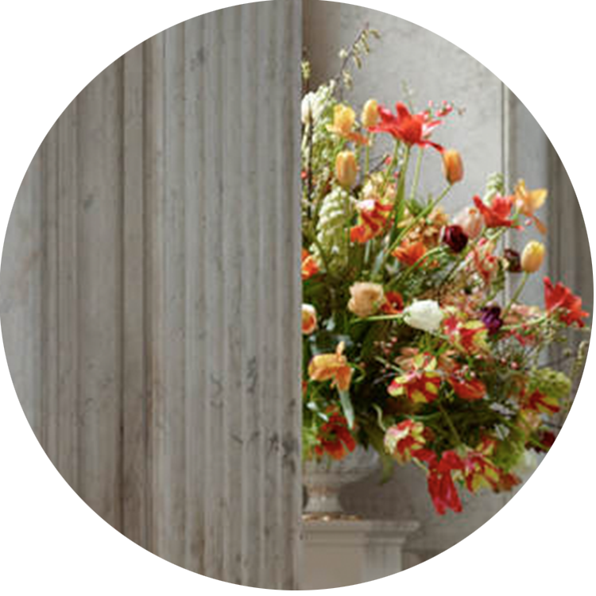

Formules van Macht
What ways are there to gain power? How does power relate to us, and what does this look like? A research into visual aspects of power, attempting to bridge instinctive observations and research. In my thesis I am trying to find tendency and decipher formulas to achieve power.
Macht
Wat is macht? Macht is de invloed die een persoon, bedrijf of organisatie heeft op anderen. Geld, politiek en macht zijn onlosmakelijk verbonden (maar hierover later meer). Als iemand macht heeft, doen andere mensen datgene wat hen wordt opgedragen, althans dat wordt geacht. Macht kent verschillende definities, gradaties en uit zich in verschillende vormen. Een vergelijkende vorm van macht is gezag. Gezag is gebaseerd op de erkenning of rechtmatigheid om macht uit te oefenen. Wanneer je eenmaal macht hebt is het moeilijk om dit weer af te staan. Macht over anderen lijkt verslavend. Als men eenmaal macht heeft verworven, is het verleidelijk om dit steeds verder uit te bouwen.
Je kan het ook wel vergelijken met een wedstrijd. Wanneer je een wedstrijd wint komt er een enorme lading testosteron vrij in je hersenen. Dit zorgt ervoor dat je meer risico’s durft te nemen, waardoor er een tunnelvisie kan ontstaan die gericht is op succes. Dit wordt ook wel het “winnaarseffect” genoemd. De kans is groot dat je de volgende wedstrijd weer wint doordat het zelfvertrouwen in je brein groeit. Als je macht uitstraalt, betekent dit niet per definitie dat je ook daadwerkelijk macht hebt. Het uitstralen van macht kan bijvoorbeeld door middel van kleding, een woning, je spullen of middels het sociaal milieu waarin je je verkeert. Zowel als individu of in een groep kan je macht uitstralen/hebben. Of je het nu wilt of niet, je kan ook geboren worden met macht door de familie waaruit je voortkomt neem als voorbeeld Prince Harry uit Engeland. Aan de andere kant kan je zelf ook bewust of onbewust macht creëren. In tegenstelling tot bijvoorbeeld een monarch, verwonder ik mij voor macht die minder voor de hand ligt en de manier waarop dit is geïntegreerd in onze maatschappij. In het vervolg van deze tekst beschrijf, vergelijk en probeer ik een brug te slaan tussen bevindingen die voortkomen uit instinctieve observaties en onderzoek.
Het onderwerp macht komt niet uit de lucht vallen. Dit onderwerp houdt mij al jaren op verschillende manieren bezig. Ik ben geïnteresseerd in de manier waarop mensen streven naar macht en succes. Wat voor manieren zijn er om macht te verkrijgen, hoe verhoudt het zich tot ons en hoe ziet dit eruit? Daar waar ik niet direct mijn interesse voor dit onderwerp kon verklaren, viel het kwartje tijdens een onderzoek naar modernistische gebouwen in Indonesië. In Indonesië bleek eind 19e eeuw een tekort aan architecten en ingenieurs. Op dat moment was het niet goed gesteld met de bestaande gebouwen en moest er veel bijgebouwd worden. Door dit te kort kwam er een stroming van modernistische architecten en ingenieurs vanuit Nederland naar Indonesië op gang. Door de komst van deze stroming nieuwe architecten kwamen de tot dan toe traditioneel Indonesische gebouwen er heel anders uit te zien.
Ineens werden er heldere constructies gebouwd en veel van de originele traditionele ontwerpen, waarin veel gebruik werd gemaakt van ornamenten, vielen weg. De nieuwe huizen werden weliswaar slimmer ontworpen en beter gebouwd, maar de traditionele Indonesische bouwstijlen met daar de bijbehorende materialen, ornamenten en nauw verbonden geschiedenis vielen hierdoor weg. In het idyllisch tropische klimaat contrasteerde deze modernistische gebouwen nogal van de traditionele houten huizen met rieten daken, die werden omringd door palmbomen en andere tropische fauna. Eenmaal bewoond hadden de bewoners van de modernistische huizen meer aanzien ten opzichte van de bewoners van de traditionele huizen. Gezien het bewind in Indonesië van die tijd en de Westerse uitstraling van huizen was dit niet gek. Dit was het moment dat ik besefte dat niet persé de architectuur in Indonesië mij boeide, maar eerder de (on)bewuste gevolgen en/of achterliggende strategieën die ten grondslag liggen achter dergelijke façades die leiden naar meer macht/aanzien.

Villa Isola in Bandung uit 1933 van architect Charles Prosper Wolff Schoemaker.
De kans is groot dat je een wedstrijd weer wint, het brein helpt de winnaar hiermee, hierdoor groeit je zelfvertrouwen en durf je steeds meer risico te nemen. Ook is het moeilijk om eenmaal verworven macht weer af te staan. Je kan macht uitstralen, wat niet per definitie betekend dat je ook daadwerkelijk macht hebt. Het uitstralen van macht kan bijvoorbeeld doormiddel van kleding, een woning (materieel) of middels het sociaal milieu waarin je je verkeert. Je kan als groep gezamenlijk macht uitstralen/hebben, maar ook als individu. Je kunt ook geboren worden met macht door de familie waar je vandaan komt (politiek) Maar je kunt jezelf ook macht aanleren, dit kan bewust of onbewust zijn.
Nieuwe Macht
Een relatief nieuwe plek waar tegenwoordig ook macht te verkrijgen is, is het internet. Een voorbeeld hiervan zijn beautyvloggers met hun eigen kanaal op youtube. Veel van deze “influencers” beginnen als jonge tiener met een youtube kanaal waarop ze laten zien hoe je make up aanbrengt. Vier jaar later hebben zij miljoenen volgers, een eigen make-up lijn en vaak zelfs werknemers. Een van de redenen dat sommigen van deze vloggers zo succesvol zijn geworden, is omdat ze als een van de eerste youtubers dagelijkse dingen vastlegden. Doorsnee mensen die gewone dagelijkse dingen filmden en uploadden. Juist omdat ze zo gewoon zijn kunnen andere mensen zich gemakkelijk identificeren.
Ze zien een persoon - net als jij en ik - opgroeien en succesvol worden. Zo wordt het voor veel andere mensen in gedachte ook haalbaar om succesvol te worden, ongeacht welke achtergrond en/of afkomst ze ten deel vallen. Veel van de volgers blijven trouw volgen omdat ze als het ware samen zijn opgegroeid en de influencer zien als een soort vriend, oudere broer of zus. Dit is ook een van de redenen dat influencers vaak veel support blijven behouden onder hun volgers. Naarmate het bereik groeit, worden ze steeds groter en succesvoller. Ze kunnen soms zo groot worden dat ze op een gegeven moment een eigen product kunnen lanceren dat binnen vierentwintig uur is uitverkocht. Ze draaien dan een mega omzet waar menige cosmetica firma’s van dromen. Door het grote bereik dat ze hebben werken grote bedrijven graag samen met influencers.
American Dream
Amerika heeft zichzelf altijd al als groots en intimiderend opgesteld. Op soort van Napoleontische manier staan ze altijd vooraan in de rij als het gaat om landclaim. Is het niet op aarde dan wel ergens anders in het universum. Met de bijbehorende oorlogsretoriek, kijk je wel uit voordat je gaat sollen met Amerika. Het land van onbegrensde mogelijkheden, waar veel mensen graag onderdeel van willen zijn. “The American Dream” Dit is het Amerikaanse ideaalbeeld wat staat voor vrijheid en gelijkheid van alle mensen. The sky is the limit en elke droom is haalbaar, zolang je er maar hard voor werkt. Binnen deze droom is de afkomst van de president niet belangrijk en kan iedereen multimiljonair worden. Het maakt hierin niet uit of je van Adel bent of uit de Bronx komt.
Het verhaal van de krantenjongen die eindigt als directeur van een grote krant, is illustratief voor de American Dream. De eerste immigranten die naar deze “nieuwe wereld” kwamen koesterden deze vrijheid en dromen, en wilden hierin geloven. Amerika werd het land van de vrijheid. De overtuiging van de American Dream is rond de 17 eeuw ontstaan. Het toen nog ongecultiveerde Amerika, werd het land van oneindige mogelijkheden. Veel migranten trokken rond deze periode naar Amerika om een nieuwe start te maken
In Europa hadden veel mensen geen perspectief om door te kunnen groeien naar een beter leven. Dit werd belemmerd vanwege hun afkomst, dit was alleen weggelegd voor koningshuizen of mensen van adel. Zonder de belemmeringen van adel, regering en kerk hoopten deze migrante n deze kansen wel in het nieuwe Amerika te vinden. De reden dat veel mensen de stap durfden te wagen, is omdat ze vaak via familieleden hoorden hoe geweldig het was in Amerika, wat ze allemaal al hadden bereikt en hoe groot de huizen waren.
Achteraf blijkt dat veel van deze verhalen mooier werden gemaakt dan ze echt waren. Er zijn genoeg voorbeelden van mensen die de The American Dream hebben waargemaakt, echter was dit niet voor iedereen weggelegd. Toch is The American Dream tot op de dag van vandaag nog belangrijk voor veel mensen en iets waarin ze geloven. Dagelijks komen nog veel individuen naar Amerika om hun Amerikaanse droom proberen waar te maken.
De kans is groot dat je een wedstrijd weer wint, het brein helpt de winnaar hiermee, hierdoor groeit je zelfvertrouwen en durf je steeds meer risico te nemen. Ook is het moeilijk om eenmaal verworven macht weer af te staan. Je kan macht uitstralen, wat niet per definitie betekend dat je ook daadwerkelijk macht hebt. Het uitstralen van macht kan bijvoorbeeld doormiddel van kleding, een woning (materieel) of middels het sociaal milieu waarin je je verkeert. Je kan als groep gezamenlijk macht uitstralen/hebben, maar ook als individu. Je kunt ook geboren worden met macht door de familie waar je vandaan komt (politiek) Maar je kunt jezelf ook macht aanleren, dit kan bewust of onbewust zijn.
Amerikaanse Ambassades

Amerikaanse Ambassade Being China, met in de vijver een werk van Jeff koons

Voorbeeld van een griekse tempel
Een duidelijk voorbeeld van status en machtsvertoon van Amerika zijn hun ambassadegebouwen in andere landen. In vergelijking met andere landen zijn er een aantal manieren waarop de Amerikaanse ambassades zich onderscheiden ten opzichte van andere landen. Amerika is een groot land en er zijn veel Amerikanen die in het buitenland wonen. Ze hebben dan ook altijd een groot gebouw nodig voor hun ambassades. Sinds de aanslagen van 9/11 is het veiligheidsniveau opgeschroefd. Ze kopen een stuk grond en maken eventuele bestaande gebouwen met de grond gelijk. Vervolgens ontwerpen ze een gebouw in de vorm van een fort, zodat ze goed overzicht hebben over de omgeving. Dit voor optimale veiligheid voor alle medewerkers.
Ze kunnen eventuele dreiging van een afstand sneller zien en ingrijpen indien nodig. De architectonische en geografische basiseisen van een Amerikaanse ambassade zijn: groot, goed overzicht over de omgeving en met veel eigen grond rondom het gebouw heen. Een ander belangrijk onderdeel is het uiterlijk van deze gebouwen en het verhaal dat het met zich mee brengt. Ze werken veel met symboliek die vaak verwant is aan trots en macht. Zo hebben ze in Beijing (China) het gebouw geplaatst op een zelf aangelegde vijver waarin het water centraal staat. De symboliek achter water is dat het heilzaam is, het reinigt je niet alleen aan de buitenkant maar ook aan de binnenkant.
Dit is iets wat binnen de Chinese cultuur als zeer waardevol wordt beschouwd, niet zozeer binnen de Amerikaanse cultuur. Op deze manier gebruikt Amerika Chinese symboliek in hun architectonisch ontwerp, om zo saamhorigheid, interesse en respect te tonen aan de Chinese cultuur. Via een pad over het water loop je naar de entree toe, waar het gebouw balanceert op zuilen. Je loopt dus over het helende water naar de bron toe, de bron is in dit geval de Amerikaanse ambassade. In de vijver buiten het gebouw staat een 7,6 ton wegend sculptuur van Amerika’s meest succesvolle kunstenaar van dit moment Jeff Koons. Het sculptuur in de vorm van tulpen komt uit de serie ‘Celebrations’. Tulpen staan symbool voor geluk in de Chinese cultuur.
Het is dan ook een bewuste keuze geweest dat de bezoekers dit kunstwerk zien als ze naar de entree lopen van het gebouw. Door de grootte van dit alles voel je je als bezoeker al snel overweldigd. Dit zijn manieren waarmee Amerika puur door uiterlijke kenmerken kracht en macht uitstralen. Dit is zonder enige vorm van schriftelijke of verbale communicatie naar de buitenwereld toe. Het is de massaliteit van dit alles wat het machtsvertoon versterkt. Je kan het ook wel vergelijken met een kasteel uit de middeleeuwen. Bezoek kwam hier te voet of met paard en wagen over een enorm lange oprijlaan en kon zo direct zien hoeveel land de familie bezat. Andersom had de familie zo ook overzicht op de omgeving om bijvoorbeeld eventuele vijanden te zien aankomen, tijd te kopen en maatregelen te treffen, om ze vervolgens op afstand te houden.
Als je überhaupt al in je hoofd haalde een kasteel te bestormen zou je dus wel twee keer achter je oren krabben voordat je een poging zou wagen om de bewoners te bestelen, vermoorden of pogen de troon te confisqueren. Families uit deze tijd lieten zich schilderen door de meest getalenteerde kunstenaars. Wie deze talenten waren werd tegelijkertijd bepaald door dezelfde families. Dit kwam omdat alleen zij het geld hadden om schilders in te huren en zich te laten portretteren.
Zo bepaalden de rijke families wat mooi was en hoe mensen eruit moesten zien. En op deze manier herinneren wij vandaag de dag hoe de rijken van toen met daarbij behorende kledij et cetera eruit zagen. Wanneer we even in deze tijd blijven kunnen we een tendens zien: Amerika huurt Jeff Koons in om een modern zelfportret van Amerika te maken en bepaalt daarmee dat Jeff Koons een van de meest talentvolle kunstenaars is. Hoewel smaken verschillen kunnen we er niet omheen dat Jeff Koons daadwerkelijk een erg succesvol kunstenaar is.
De Amerikaanse ambassades profileren zich op zo’n manier dat ze jou als bezoeker/voorbijganger ontzag inboezemen. Dit zijn enkel een paar voorbeelden van de vele vormen van machtsvertoon. Later in de tekst haal ik ook nog andere manieren aan. De uiterlijke kenmerken zijn een façade waarachter Amerika zich verschuilt. Een façade is de voorgevel van een gebouw, maar wordt ook gebruikt om bij mensen te spreken van 'de uiterlijke schijn ophouden' De Façade van een gebouw is de theatrale kant van een gebouw, dit is de kant die emotie kan opwekken bij bezoeker. Het machtsvertoon reikt niet tot enkel de buitenkant van de ambassades, dit kan ook aan de binnenkant van een gebouw. Een kunstenares die dat goed laat zien is Jacqueline Hassink.
The table of Power

Total plassen Jean Millier Parijs, Frankrijk

La mesa de Repsol, Madrid

Onbekend

Banco Santander Paseo de Pereda, 9-12 Santander, Spanje

Onbekend
Jacqueline Hassink werkte met onderwerpen als economische macht. Met haar Project The Table of Power laat Hassink lege vergaderruimtes zien van de in de jaren 90 meest succesvolle bedrijven, gepubliceerd door Fortune’s Global 500 magazine. Op deze afbeeldingen zie je lege vergaderruimtes zonder medewerkers of bezoekers. Hierdoor krijg je een impressie wat voor een impact zo’n ruimte op iemand kan maken. Deze foto’s laten de losse materiële ingrediënten zien van macht, alleen zijn de materialen niet in functie in deze afbeeldingen. Je ziet hierdoor heel duidelijk dat de ruimte alleen al een façade is, die op zichzelf krachtig overkomt. Wanneer er functie aan deze ruimte wordt toegevoegd versterkt deze kracht nog meer. In vergelijking met de ambassadegebouwen, zijn deze vergaderruimtes ook groot ontworpen.

Vergaderruimtes worden bewust zo bedacht en ingericht, de grootste ruimtes zijn de belangrijkste ruimtes, hier komen het bestuur en de belangrijkste gezelschappen samen. Een ovale tafel zorgt ervoor dat iedereen gelijk zit en er geen specifieke kop is waardoor de hiërarchie gelijk is. Dit is in het geval van een bestuurs- of aandeelhoudersvergadering belangrijk, zodat ego’s niet in de weg komen te zitten. Maar buiten deze vergaderruimtes is de rolverdeling weer anders, dan is iedereen weer de leider over zijn eigen groep pupillen.

Dit gevoel heb ik zelf meegemaakt toen ik bij een groot advocatenkantoor in Amsterdam moest presenteren. Ik was gevraagd een publicatie te ontwerpen en was zeker van mijn ontwerp en concept. Ik was wat eerder gekomen zodat ik mijn presentatie goed kon voorbereiden. Terwijl ik mij aan het voorbereiden was kwam een horeca medewerker van het kantoor de lunch klaar zetten. Alle hapjes en drankjes werden klaargelegd. Als laatste kwam er een fruitschaal op tafel. Ik keek naar deze schaal en zag dat er allemaal hele dure moeilijk te vinden vruchten op tafel kwamen. Mango stenen, rode passievruchten, dragonfruits en nog andere speciale vruchten. Ineens voelde ik mij kwetsbaar en werd ik onzeker over het ontwerpwerk wat ik had gemaakt en of dit wel aan hun niveau voldeed. Dit komt omdat ik mij ervan bewust van was dat dit soort vruchten exclusiever zijn en moeilijker verkrijgbaar en daarom voelde het alsof mijn ontwerp ook heel exclusief en ingewikkeld moest zijn terwijl dit nooit aan mij verteld is.
Allen & Overy
Boardroom Allen & Overy Amsterdam
Dit gevoel heb ik zelf meegemaakt toen ik bij een groot advocatenkantoor in Amsterdam moest presenteren. Ik was gevraagd een publicatie te ontwerpen en was zeker van mijn ontwerp en concept. Ik was wat eerder gekomen zodat ik mijn presentatie goed kon voorbereiden. Terwijl ik mij aan het voorbereiden was kwam een horeca medewerker van het kantoor de lunch klaar zetten. Alle hapjes en drankjes werden klaargelegd. Als laatste kwam er een fruitschaal op tafel. Ik keek naar deze schaal en zag dat er allemaal hele dure moeilijk te vinden v ruchten op tafel kwamen.
Mango stenen, rode passievruchten, dragonfruits en nog andere speciale vruchten. Ineens voelde ik mij kwetsbaar en werd ik onzeker over het ontwerp werk wat ik had gemaakt en of dit wel aan hun niveau voldeed. Dit komt omdat ik mij ervan bewust van was dat dit soort vruchten exclusiever zijn en moeilijker verkrijgbaar en daarom voelde het alsof mijn ontwerp ook heel exclusief en ingewikkeld moest zijn terwijl dit nooit aan mij verteld is.
Amerikaanse Ambassade in Londen
Amerikaanse Ambassade in Londen gelegen aan de Thames in Londen
Een nieuwe toevoeging aan de collectie van Amerikaanse ambassades is het gebouw gelegen aan de Thames in Londen. Ook deze keer is er voor gekozen om het territorium als een fort in te delen. Dit gebouw werd in opdracht van toenmalig president Obama gebouwd, zoals van hem verwacht in tegenstelling tot de huidige president Trump werd er veel aan gedaan om het zo milieuvriendelijk mogelijk te maken.
Het regenwater wordt verzameld via het dak en daarmee wordt onder andere het toilet gespoeld, de zijkant van het gebouw die in de zon staat is volledig bedekt met zonnepanelen en er wordt gebruik gemaakt van aardwarmte om het gebouw binnen te verwarmen. Qua ontwerp zijn er een aantal opvallende symbolische tekens. Het gehele pand is van glas om daarmee transparantie uit te stralen, iets wat ze al eerder hebben gebruikt in andere ambassades, zoals die in Beijing. Over het glas zijn symbolisch vijgenbladen geplaatst wat staat voor uitnodiging.
Wat deze vijgenbladen alleen verstoppen zijn de zwaar metalen palen, die terreur op afstand moet houden. Om het gebouw loopt een soort van slotgracht7 met daaromheen aangeplante natuur/ parken. Sommige van deze parken zijn toegankelijk voor het publiek, andere mogen vanwege veiligheidsredenen niet worden bezocht.
Waar het lijkt op een gebaar voor de bevolking van Londen voor meer sfeer in de omgeving, is het er eigenlijk een façade om totale controle en zicht te hebben over de omgeving. Deze vijver zorgt er ook voor dat je precies op elke hoek beveiliging hebt staan die samen 360 graden overzicht hebben over de omgeving.
Binnen het pand zijn er ook nog wat opvallende details. De kantoren hebben extreem hoge plafonds, spots met felle verlichting en er zijn alleen grote open ruimtes zonder scheidingsmuren. Dit is gedaan om samenwerking tussen collega’s aan te moedigen en productiever te laten zijn. Anders gezegd, ze staan hier continue in the spotlight onder druk en in het zicht. Hier zijn geen ruimtes om je in te verstoppen of muren om achter te schuilen. Normaal kun je achter een muur of in een hoekje gaan zitten zodat mensen niet met je mee kunnen kijken naar je computer om te zien waar je mee bezig bent, hier kan dat niet. Dit is dezelfde methode die bedrijven gebruiken bij hun Boardrooms wat ik eerder liet zien in het werk van Jaqueline Hassink. Door middel van licht, grootte en hoogte kun je mensen onder druk zetten en intimideren, waardoor ze harder gaan werken.
Details van de aangemaakte vijver en anti terreur palen
Binnen een ambassade, en zeker de Amerikaanse, is een visum aanvraag de meest intense en intimiderende ervaring voor een bezoeker. Er kan veel afhangen van een visum en het wordt steeds moeilijker om deze voor Amerika te krijgen. Waarschijnlijk is dat de reden dat van deze ruimte een onaangename en kille plek gemaakt is, zodat je als bezoeker altijd op scherp staat. Door zich zo intimiderend op te stellen achten ze de kans kleiner dat er fraudeurs binnen komen die een visum willen, maar hier geen recht op hebben. Wanneer bezoekers binnen komen bij de ambassade worden ze verwelkomd met een groot embleem van het Amerikaans nationale symbool: de adelaar. Zo kun je je niet vergissen over waar je bent.
Bezoekers die voor een visum komen voelen zich vaak geïntimideerd door dit symbool, Amerikaanse bezoekers, daarintegen, voelen zich juist vaak thuis door dit symbool. Dit is het moment waarop je de adelaar zijn vleugels om je heen laat slaan en je te verwelkomen in deze groep. Hier staat wel tegenover dat je volgens de Amerikaanse regels zult leven die nog altijd gebaseerd zijn op “the American Dream”. De ruimte zelf is geheel wit, behalve de stoelen die zijn zwart. Deze stoelen zijn bedoeld voor de visumaanvrager om in te wachten totdat ze hun gesprek hebben. Je bent je er op deze manier van bewust dat je een buitenstaander bent, doordat je in deze stabiele omgeving opvalt. Wanneer je aan het wachten bent op je beurt is het werk van Rachel Whiteread niet te missen.
De kunstenares was benaderd door de Amerikaanse ambassade of ze een op maat gemaakt nieuw werk wilde maken. Dit kunstwerk is een blauwdruk gebaseerd op een typisch jaren 50-woning, die te koop was in verschillende catalogussen. Deze huizen waren bedoeld voor mensen die modaal wilde leven, niet een heel groot budget hadden, maar wel graag een nieuwe huis wilden. Deze huizen waren in eerste instantie gebouwd en bedacht voor militairen die terug kwamen naar het Amerika en op deze manier de keuze hadden voor een woning en deze daarna snel te kunnen laten bouwen. Dit werd zo goed ontvangen en populair dat de ontwerpen werden uitgebreid en er meer details mogelijk waren. De huizen kregen ook verschillende namen zoals: Alhambra, Rosita, Savoy, Cinderella, Hollywood en Betsy Ross. Dit om de fantasieën en ambities uit de middenklasse te stimuleren voor succes te gaan. Deze paradijzen konden worden aangepast met zowel basis als sierlijke toevoegingen en waren beschikbaar tegen voordelige voorwaarden zoals lenen. Naarmate materialen werden ontwikkeld en aangepast, konden de bouwkosten verlaagd worden.
Dit is de vwacht ruimte voor je visum aanvraag
Hierdoor werd woningbezit een haalbare ambitie. Dit kunstwerk is dan ook als een groet bedoeld naar deze Amerikanen. Om te onthouden waar ze vandaan komen en altijd hard moeten werken om hun dromen na te jagen en hun land trots te maken. Buiten dat er veel mensen naar de ambassade komen voor een visum aan te vragen, zijn er ook veel Amerikanen die naar de ambassade komen om bepaalde dingen te regelen zoals: geboortes, overlijdens berichten, huwelijken en ga zo maar door. Voor deze Amerikanen staat deze ambassade voor een directe link naar hun thuisfront. Een opvallend detail is dat de huidige president Donald Trump8 ervoor heeft gekozen het ambassadegebouw niet officieel te openen. Iets wat normaal absoluut met veel trots gedaan wordt door de voorgaande presidenten. Trump zou het veel te duur te vinden voor wat het uiteindelijk is geworden en vond de milieuvriendelijke snufjes onnodig. De totale kosten van dit gebouw waren 1 miljard dollar, de duurste ambassade ooit gemaakt. Dit kon betaald worden door onder andere
de verkoop van meerdere vastgoed en het oude ambassade gebouw dat in de duurste wijk van London stond, London Mayfair. Hier stond de oude ambassade sinds 1956, ontworpen door modernist Eero Saarinen. Trump was fan van de oude ambassade en noemden het lange tijd de mooiste ambassade ooit gebouwd. Een andere reden is omdat Trump zich altijd wilt identificeren met chique en elitaire wijken.
Dit is de vwacht ruimte voor je visum aanvraag
Hij voelt niks voor een opkomende buurt en houdt zich graag aan de traditionele regels als het gaat over onderwerpen als dit. Landen kiezen voor verschillende soorten ambassadegebouwen, dit is afhankelijk van de grootte van het land en de hoeveelheid (buur)landen waar ze een goede relatie mee hebben . Het is interessant dat je door middel van plaatsing van een gebouw binnen een stad kan laten zien hoe je jezelf als land wilt presenteren. Zoals dat ambassades dichter naar elkaar toe gaan verhuizen om te laten zien dat ze als landen een betere relatie willen opbouwen of behouden. Dit zijn ongeschreven regels, waar geen buitenstaander je toe dwingt. Maar het een manier maakt om te laten zien, dat je open staat voor veranderingen en betere relaties en zo ook eventueel een betere toekomst en vooruitzicht. Landen als Nederland, Belgie en Scandinavische landen kiezen meestal voor een bestaand gebouw om in te trekken. Hierdoor vragen ze niet teveel van het land waar ze in trekken.
Kunst werk Becoming Home van Rachel Whiteread
Ook verhuizen “kleinere” vaak in een buurt waar andere landen hun ambassade hebben waar ze een goede relatie mee hebben. Zo kunnen ze bijvoorbeeld kosten op beveiliging besparen door dit onderling samen te betalen. Landen die hier niet aan meedoen zijn een stuk minder transparant naar de buitenwereld over wat er binnen de ambassades en zo ook achter de schermen bij het bestuur van het land gebeurd en besproken word. Neem als voorbeeld de Russische ambassade in California, waar in 2017 midden in de zomer rook uit de schoorsteen kwam omdat ze “geheimen” documenten aan het verbranden waren voordat ze de ambassade gedwongen moesten verlaten.
Minerva
Leden van de Leidse studentenvereniging Minerva
De waardijns van het Amsterdamse lakenbereidersgilde, bekend als ‘De Staalmeesters’, Rembrandt van Rijn, 1662
Minerva is de oudste en grootste studenten sociëteit in Leiden. Elk jaar komen er vele studenten naar Leiden toe in de hoop zich bij deze vereniging te kunnen toevoegen. Het is bekend dat het er bij studentencorpsen heftig aan toe kan gaan. Zeker bij hun zogeheten introductie weken oftewel de “ontgroening”. Wat er precies gebeurd tijdens deze weken in onbekend en blijft achter gesloten deuren. Wel zijn er een aantal voorbeelden naar buiten gekomen, zoals dat je bier uit een bilspleet moet drinken, naakt door het verenging gebouw moet lopen en cocaïne van een paar borsten moet snuiven. Dit zijn voorbeelden die bij de ontgroening van Minerva horen, maar dit zijn nog maar lichtgewicht voorbeelden. Zoiets doe je natuurlijk niet voor je plezier, maar beginnende studenten hebben er veel voor over om bij Minerva te mogen horen, en een Minervaan genoemd te worden.
De reden dat studenten zich graag bij Minerva willen aansluiten is omdat het goed op je cv staat als je bij Minerva hebt gezeten tijdens je studententijd. Ruim tweederde van invloedrijk Nederland is lid geweest van het corps of een andere studentenvereniging. Het bestuur van Unilever en Abn Amro waren jarenlang alleen maar oud minervanen. Deze oud leden hielpen andere alumni het bedrijf in om zo een grotere rol te krijgen binnen het bedrijf en samen te werken met mensen waarop ze kunnen bouwen en de werkwijze van kenden.
Unilever zijn afdeling wasmiddelen werd vanwege het grote aantal Minerva Leden ook wel de “De Leidse Zeep Maatschappij” genoemd. Unilever hechtte jarenlang waarde aan bepaalde karakter eigenschappen van Minervanen. Nadat naar buiten is gekomen dat er een hele heftige machocultuur heerst binnen deze verenigingen is er door veel bedrijven besloten te minderen met het aannemen van oud minerva leden. Sommige bedrijven in Groningen hebben zelfs in zijn geheel besloten om geen oud Vindicat leden meer aan te nemen om zo te voorkomen dat ze geen praatjesmakers meer aannemen ze noemen dit het ‘geen-eikels-beleid’. Er is dus een verandering gaande in de waarde van een studenten vereniging. Waar veel oud leden nog zweren bij deze tradities. Zie je dat veel bedrijven juist niet in associatie willen worden gebracht met deze studentencorpsen.
Archief foto ontgroening Minerva, Leiden 1973
Foto ontgroening Vindicat, Groningen 2015
Dit komt omdat er de afgelopen jaren meer slechts dan goed naar buiten is gekomen over deze verenigingen. Meerdere studenten zijn overleden tijdens intro weken. En bij veel verenigingen gaat het meer over drank drugs en seks dan over intelligentie studies of de toekomst. Veel van deze studenten denken al zeker te zijn van hun plek in een bestuur later, omdat ze dit gezien hebben bij hun ouders en overgrootouders die ook, bij de dezelfde verenigingen hebben gezeten. Maar dit was een andere tijd. Bedrijven en mensen vragen tegenwoordig voor transparantie en eerlijkheid. En hierin zullen de verenigingen moeten veranderen willen ze over 10 jaar nog blijven bestaan en van belang zijn.
Een groot onderdeel van deze verenigingen is het dranken beleid. Afgelopen jaar werd bekend, dat er wordt gestimuleerd om veel te drinken. Wanneer je niet op een gezamenlijke borrel bent word je gebeld waar je bent en word je verwacht een shot jenever drinken omdat je te laat bent. Hierdoor kampen veel studenten en alumni met alcoholproblemen en depressie. Iets wat minder bekend is is dat veel studenten verenigingen bier deals hebben met leveranciers.
Omdat verenigingen het hele jaar door veel bier drinken, hebben ze vaak regelingen met bier leveranciers waardoor ze hoge kortingen krijgen en soms zelfs maar 20% hoeven te betalen. Zoveel liters bier drinken ze dus weg. Het geld wat ze hiermee verdienen stoppen ze in hun verenigingen en hiermee kunnen ze dingen als de introweek en verbouwingen bekostigen. Mocht zo’n regeling met een bier leverancier weg vallen dan kunnen veel dingen niet meer worden betaald. Dat is ook een van de redenen dat het gestimuleerd wordt om veel te drinken tijdens je studie. Maar ook al zouden ze geen bier abonnementen meer hebben, dan zou alcohol alsnog een groot probleem zijn geweest binnen de verenigingen. Dit komt omdat alcohol een manier is om onzekerheid weg te dringen en grootspraak te krijgen. Veel van deze studenten zijn erg onzeker tijdens hun studententijd en zullen daarom nooit verklikken wat er tijdens de ontgroening gebeurd bijvoorbeeld. Ze willen ergens bij horen en het gevoel hebben dat ze bij een groep horen, waarmee ze samen de wereld aan kunnen.
Dit is waarom je deze jongens vaak in groepen ziet. Ze voelen zich sterk binnen een groep en durven meer. Ze zijn luidruchtig en lopen in hetzelfde9 “jasje dasje” gekleed en daardoor komen ze zo imposant en krachtig over. Wanneer je ze individueel zou bekijken, zul je zien dat ze hetzelfde zijn als ieder ander.
Cheerleading effect
Dit fenomeen heet ook wel het “cheerleading effect” Het cheerleading effect wordt voor het eerst genoemd in de televisieserie “How i met your mother’ waarbij de vrouwenverslinder Barney Stinson uitlegt wat dit effect betekent. Hij legt uit dat vrouwen in een groep aantrekkelijker lijken, dan wanneer je ze individueel beoordeeld. Wanneer je de vrouw individueel gaat beoordelen zie je de gebreken en schoonheidsfoutjes. Het heet het cheerleading effect omdat cheerleaders in een groep nog aantrekkelijker worden gevonden dan als dat ze apart lopen, ook omdat ze allemaal dezelfde kleding aan hebben komen als groep heel krachtig over. Vaak is 1 iemand binnen deze groep heel aantrekkelijk waardoor de rest van de groep dat ook lijkt. Dit is allemaal heel oppervlakkig maar het werkt wel zo.
Screenshot uit een scene van “how i met your mother”
Dit effect is onderzocht door Neurobioloog Edward Vul en psycholoog Drew Walker van de Universiteit van Californië, nadat ze over dit effect hadden gehoord waren ze vastberaden om wetenschappelijk te bewijzen dat dit echt zo is, en met succes! Eerder gedaan onderzoek had al aangetoond dat je brein van kleine deeltjes informatie een geheel probeert te maken en hier een algemene indruk van creëert. Dus het slaat niet alle informatie op en onthoud alleen de dingen die het aantrekkelijk vindt, minder mooie details vergeet het. Tenzij je er op aandachtig op let, dan slaat het brein het wel op. Met een vijftal experimenten bewezen de onderzoekers dat dit werkt: ze deden meerdere onderzoeken en tests: en elke keer kwam eruit dat het proef personen zich schuldig maakte aan het cheerleader-effect, het maakte geen verschil of ze mannen of vrouwen moesten beoordelen. Ook uit dit onderzoek bleek dat je brein dus eerst een snelle inschatting van de groep als geheel maakt, en die later afzonderlijk toepast op individuen.
Screenshot uit een scene van “how i met your mother”
Hierdoor gaan deze meer op het groepsgemiddelde lijken, met als gevolg dat je hun individuele imperfecties over het hoofd ziet. Het effect werkt niet alleen in grote groepen en het is ook bewezen te werken met groepen van 5 personen. Het is dus niet zo gek dat deze groepen studenten zo imposant overkomen. Meestal zijn het 1 of 2 studenten die binnen zo’n groep opvallen door hun luidruchtigheid en hoe ze eruit zien, meestal zijn dit de “mooie jongens”. De rest valt inderdaad niet op maar omdat je niet op deze individuelen let neem je aan dat ze even luidruchtig en arrogant zijn. In de documentaire Man Made van Sunny Bergman interviewt Sunny de de zoon van haar buurman die in een studenten vereniging zit. Ze zijn met zijn huisgenoten relaxed aan het bowlen als Sunny vraagt wie het populairst bij de vrouwen is en het meeste scoren.
Screenshot uit een scene van “how i met your mother”
De sfeer verandert wanneer er een discussie ontstaat over wie dit is. Een iemand zegt dat hij dat overduidelijk is, maar dan zegt Sunny haar buurjongen “ja maar alleen bij de lelijke meiden”. “Ik scoor de echte mooie meiden, daar zijn er minder van.” Je ziet dat hun groep een beetje uit een valt en ze ineens allemaal voor zichzelf gaan. Je ziet dat hun façade er af gaat en ineens staan daar twee fragiele jongen die een beetje blozen. Deze verenigingen zijn een menselijke facade waarin je je achter kan verschuilen en sterk en krachtig kan overkomen. Je leert sociale codes over het bedrijfsleven, maar niet over levenslessen en emotionele lessen. Logisch dat ze daarom niet echt vooruit gaan als ze in deze oude tradities blijven, zij denken dat deze oude methodes voor altijd een formule tot succes zal blijven.
Screenshot uit een scene van “how i met your mother”
Rites of Passage

00:31

00:52

01:39

01:52

02:21

02:35
Kunstenares Julika Rudelius toont in haar werk hoe macht structuren eruit kunnen zien. In de video installatie Rites of Passage toont ze twee gesynchroniseerde video's naast elkaar, die elkaar steeds aflossen. Je ziet in deze video's succesvolle financiële en politieke leiders die hun pupillen advies geven en overhoren. Dit gebeurd allemaal in de privé kantoren van deze mentors waarin ze op een nonchalante bijna seksuele manier met hun pupillen een gesprek hebben, of juist stil in de ruimte staan en elkaar observeren. Een pupil laat zien en horen hoe hij over een bepaald onderwerp zou praten in dit geval is het onderwerp politieke leiders, zijn mentor bekijkt nauwlettend en geeft aanwijzingen raad en advies over hoe hij bepaalde dingen sterker en krachtiger over kan laten komen.
Het gaat hier voornamelijk over de houding van de pupillen en de manier waarop ze praten, bewegen oogcontact maken en hun lichaamstaal sterk houden het gaat binnen deze gesprekken niet zozeer over de onderwerpen zelf of het belang hiervan, maar puur over de visuele aspecten van het presenteren. Dit lijken momentopnames uit een waargebeurd gesprek. Maar in de werkelijkheid is dit allemaal in scene gezet door Rudelius. Zo zie je dat alles in scene gezet kan worden en je blindelings kan vertrouwen op dingen zolang je er niet teveel achter zoekt. Dit vertrouwen komt omdat alles heel gedetailleerd en geloofwaardig in elkaar zit. Hun kleding klopt helemaal en is herkenbaar. Je ziet de Amerikaanse vlag dus je gelooft snel dat het politieke of financiële leiders zijn. De kantoorruimtes zijn zoals je ziet in bekende series en presidentiële foto’s. Door deze façade die er betrouwbaar en goed uitziet bevraag je niet of het wel echt is wat je ziet.
Je voordoen als iemand anders, is iets wat veel wordt gaan onder jongeren. Deze andere personages van zichzelf laten ze zien door middel van hun Instagram account. Instagram is voor jongeren een platform waarin de rangorde bepaald wordt. Met hun eigen verzonnen ongeschreven regels bepalen ze digitaal aan welke tafel je plaats kunt nemen in de schoolkantine. De jongeren werken met tags binnen hun instagram accounts om zo meer clout te genereren. Clout betekend invloed dit is je groep volgers die naar je luistert en ondersteunen waar je voor staat. Volgers werken als een kettingreactie omdat de volger van degene die jou volgt jou weer gaat volgen. Op deze manier krijg je meer clout. Taggen doe je door in je foto mensen te taggen. Je koppelt dan andermans account naam op je geposte foto jouw volgers kunnen deze getagde persoon zien. Gebruikelijk doe je dit bijvoorbeeld in een familiefoto van kerst waarbij je je neefje nichtjes en ooms tagged. Maar jongeren hebben hun eigen manier hier voor bedacht.
Instagram foto van Kylie Jenner met haar collectie auto’s in 2019
Door de plaats van de tag van iemand kun je zien hoe close dit persoon is met degene in de foto. De lokatie van een tag is cruciaal , als je iemand tagged op de mond betekent dat het geliefde of beste vriend/vriendin is, ook wel een “broeder” of “zusje”. Andere tags plaatsen die belangrijk zijn, zijn de ogen en het hart. Dan heb je ook nog iets wat een “hoek tag” heet. Dan tag je iemand in de hoek van de afbeelding met vaak meerdere mensen over elkaar, je kunt dus nooit helemaal zien wie er allemaal zijn getagd in de hoek. Mocht je in een hoek getagged zijn dan betekent dit dat je niet nog niet bevriend ben met deze gene maar er wel potentie is voor een nieuwe vriendschap of liefde, je hebt de interesse gewekt van deze persoon. Dit alles gaat om de sociale status van deze leerlingen. En op deze manier bepalen ze wie in welke rangorde hoort. Wat er op Instagram gebeurd bepaald hoe je sociale leven eruit ziet op de middelbare school. Niemand van deze leerlingen wilt eindigen als een buitenbeentje.

Buiten deze tags, kun je ook populair worden door de content die je laat zien op je Instagram. Bikini foto’s in Bali, Shoppen in de Pc hooftstraat in Amsterdam en rijden in een Ferrari zijn voorbeelden die het altijd goed doen op Instagram, en waar je veel likes en comments op krijgt. Veel van deze voorbeelden zijn oorspronkelijk foto’s die gemaakt zijn door idolen van deze jongeren. Voorbeelden hiervan zijn voetballer Christiano Ronaldo, make up magnaat Kylie Jenner, en beauty volger Nikkie tutorials. Deze idolen verdienen geld met hun instagrams door middel van sponsorship deals met verschillende merken. Deze bekende mensen hebben marketings teams die hun strategieën op Instagram bepalen. Eventuele risicovolle posts worden besproken en zo eventueel vermeden. Hierdoor zijn alle Instagram posts politiek correct en spreken een grote doelgroep aan. Daardoor blijft hun “clout” groeien. Deze jongeren doen in hun eentje deze “idolen” na en streven op een extreem jonge leeftijd naar deze life style en spullen van deze mensen. Zij hebben geen begeleiding bij hun Instagram accounts. Iets wat wel een goed idee zou zijn. Aangezien het bekend is geworden dat veel jongeren te maken krijgen met criminaliteit omdat ze heel jong op een snelle manier geld willen verdienen om deze dure spullen te kunnen kopen.
Iets waarmee ze veel waardering krijgen van hun omgeving en vrienden groep. Het is verslavend voor ze om steeds meer volgers te krijgen en er is geen grens meer wanneer ze stoppen. Daardoor wordt de content steeds gekker, je kunt bijvoorbeeld laten zien hoe duur je outfit is, dan is het respectabel als je outfit minimaal €1500 euro waard is. Ander is het, het posten niet waard. Of je laat jezelf fotograferen op een jacht, die waarschijnlijk niet van jou zelf is. Uiteindelijk gaat het allemaal om de spullen die je bezit en niet om je persoonlijkheid of mentale gesteldheid. Dit is sowieso iets wat niet wordt besproken op deze instagram pagina’s.

Het gaat puur om het uiterlijk en de spullen die ze bezitten. In vergelijking met de ambassade en studenten hebben deze jongeren geen fysieke façade waar ze zich achter kunnen verschuilen in plaats daarvan hebben ze een digitale foto muur waar ze zich anders kunnen voordoen. Je spullen laten zien is niet iets nieuws wat door Instagram is ontstaan. Vermogende families worden al eeuwen lang en nu nog, geschilderd in hun mooiste kleding en laten hier vaak hun duurste spullen in zien.
Ze worden hier ook vaker mooier in geportretteerd dan dat ze daadwerkelijk zijn. Ze worden dunner gemaakt of de kronkel in hun neus wordt gladgestreken in photoshop of met de penseel. Net zoals de jongeren dit nu doen met de verschillende filters die beschikbaar zijn, waarin je je gezicht kan aanpassen en je taille kan verkleinen. Deze families bepalen wie de beste kunstenaar van dat moment is. Vroeger was dit omdat deze families de enige mensen waren die zelfportretten konden betalen, en tegenwoordig werkt het niet heel anders.
Tulpen Bollen
In deze familieportretten zag je vroeger dure zijde, handgemaakt pakken en duur meubilair wat voor deze families gemaakt was. In de portretten van het Koninklijke huis gemaakt door Erwin Olaf, is te zien dat het meevalt met de hoeveelheid dure spullen. Dit is bewust gedaan omdat dit koningshuis heel erg bezig is met het niet al te veel laten zien wat ze bezitten. Maar toch is het duidelijkheid dat dit een koningshuis is waar je naar kijkt. Ze zijn allemaal gefotografeerd voor marmeren muren. Iets wat opvalt zijn de grote hoeveelheid tulpen in de bloemen boeketten. Nederland is de grootste leverancier van tulpen, en we staan hier ook om bekend. Over de hele wereld komen ze langs om onze tulpen te zien en tulpen worden overal in de wereld ingevlogen. In de 17e eeuw in Nederland waren tulpen meer waard dan goud.
Ze werden populair toen de ambassadeur van Nederland tulpen naar Wenen stuurde. Vanaf dat moment was Europa verliefd op tulpen. Ze waren zo populair dat ze meer waard waren dan sommige huizen. Tulpen werden het symbool van rijkdom. En het koningshuis herinnert ons hier nog eens aan. Het verschil met de jongeren is dat het niet meer uitmaakt wat je afkomst is of uit welke buurt je komt. Iedereen heeft een gelijke kans op succes op Instagram als ze willen. Ze kunnen zelf bepalen hoe ze hierop willen voorkomen en wat ze laten zien, zonder begeleiding van familieleden of vrienden.
 Conclusie
Waar ik eerder dacht minder voor de hand liggende vormen van macht te constateren, blijken het in sommige gevallen bestaande vormen in een modern jasje te zijn. Of het nu gaat om een schreeuw naar aandacht van een beautyblogger om viraal te gaan (bereik = views = geld = macht) of de uitstraling van een gebouw door middel van architectuur en symboliek. Macht komt in alle vormen en maten. Macht is eigenlijk een soort van imago, iets dat je uitstraalt. Iedereen is anders en daarom ziet macht er altijd anders uit. Het zegt uiteindelijk niet meer of minder over de persoon/groep zelf. Het gaat erom wat de buitenwereld moet geloven. Wie macht heeft, is in staat om het gedrag van anderen te sturen. Andersom, zonder de ‘anderen’ is er geen macht. Macht is dus relatief, echter vormt het wel de basis over hoe wij ons als mensen tot elkaar verhouden. Vanaf een steeds jongere leeftijd wordt macht en de schaal hiervan steeds toegankelijker. De Amerikaanse droom leeft voort, en is de wereldwijde droom geworden.
Met de kennis die ik nu heb opgedaan denk ik sneller het grotere geheel te kunnen zien en door deze façades van macht heen te kunnen prikken. Ik werd snel geïmponeerd door het voorkomen of schaal van iets of iemand. Vaak was dit iets of iemand iets wat afweek van mijn persoonlijke norm dit zag er dan anders, groter of extremer uit. Dit kon zijn door de locatie de aankleding of presentatie van een persoon, en de hoeveelheid dure woorden die werden gebruikt. Waardoor ik de weg kwijt raakte door de retoriek. Nu zie ik dat veel wat dit soort dingen een manier is om je achter te kunnen schuilen. En het niet zozeer betekent dat je weet waar je mee bezig bent of overal controle over hebt. En zal ik mij als ontwerper dan ook minder snel laten inpalmen door grootspraak van mensen. Tijdens mijn periode met dirk was ik vooral bezig met alleen de visuele onderdelen van macht en de symboliek hiervan, maar nu ben ik doorgegaan en meer achter de leegte van macht gekomen en hoe oppervlakkig het vaak is.
Ook dat je hier naartoe streeft als persoon is begrijpelijk maar ook zeer oppervlakkig. Mensen die rijk wil worden, en hiervoor plannen maken worden vaak uiteindelijk niet rijk. Je moet dan toch bepaald leegte voelen die je wilt opvullen door middel van aanzien van mensen. Mensen die door hun leven zoeken naar iets wat ze leuk vinden en blij van worden, voor deze mensen is de kans groter dat ze financieel succesvol worden. En anders hebben ze iets gevonden wat ze leuk vinden en dat is misschien nog wel een belangrijke vorm van macht: geluk! Kennis is voor mij macht, mensen die zichzelf zijn is voor mij macht, hardwerkende mensen is voor mij macht, aardige mensen is voor mij macht. Niet wat voor merk kleding iemand draagt of de hoeveelheid reisjes Bali iemand heeft gehad. Ik weet zeker dat ik voor altijd een interesse zal hebben naar dit onderwerp, en hoop nog veel projecten te kunnen maken rondom dit fenomeen. Het is een onderwerp die voor altijd hedendaags zal zijn alleen dan in andere vormen zichtbaar.